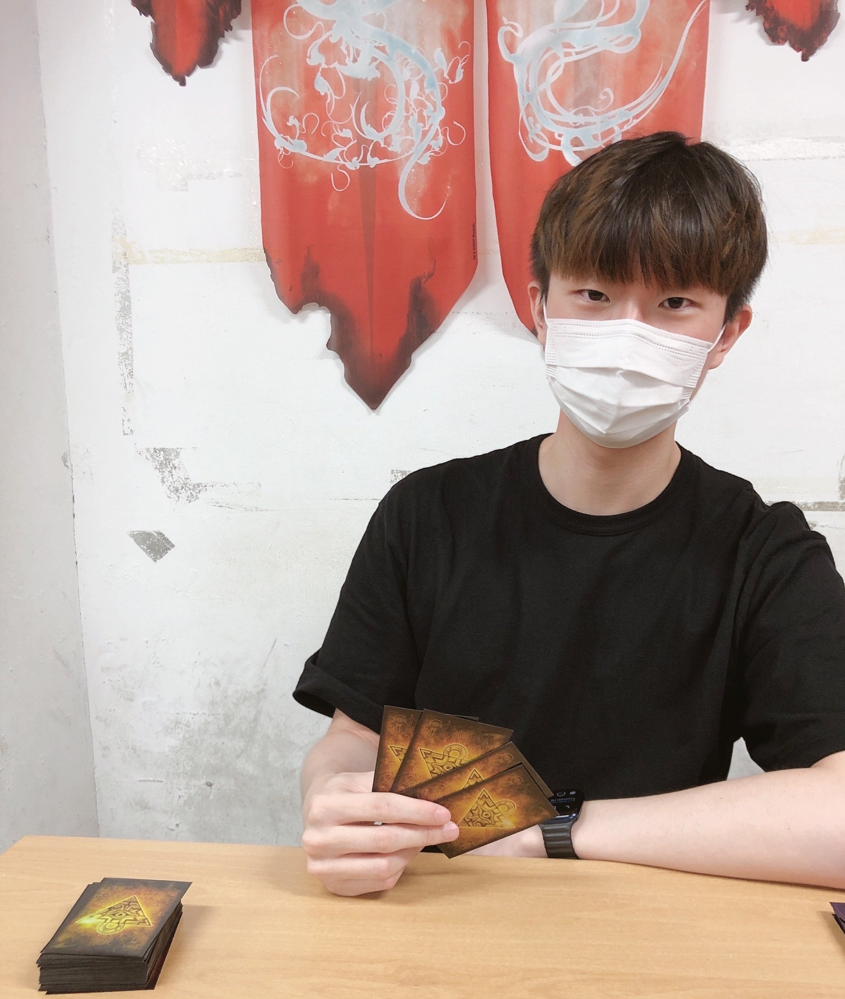

Welcome to Hanbi's Homepage!
- I am a graduate student at Seoul National University and a member of the Autonomous Robot Intelligence Laboratory (ARIL).
- My research focuses on LLM-based autonomous agents that integrate memory, perception, and decision-making for long-horizon interaction in complex environments.
- Email: hanbi218@snu.ac.kr
Education
- Seoul National University — Integrated M.S./Ph.D. (2024 – Present)
- Chung-Ang University — B.S. in Electrical and Electronic Engineering (2018 – 2024)
Research Interests
- Large Language Models (LLM)
- Vision–Language–Action Models (VLA)
- Foundation Models Understanding Multimodal Sensor Fusion
- Language based Human–Robot Interaction (HRI)
- AI Agents
Publications
-
E2Map: Experience-and-Emotion Map for Self-Reflective Robot Navigation with Language Models
ICRA, 2025 -
VL2A: Vision-LiDAR-Language-Action을 활용한 지도 없는 실내 환경에서의 정확한 목표지점 이동
AISP, 2025 -
자율지능 로봇의 경로 계획 및 설명을 위한 거대 언어 모델 적용 방안 연구
IEIE, 2024 -
Learning Update in Software-Defined Robot via Over-The-Air
IEIE, 2024
Awards & Honors
-
Grand Prize (Chairman’s Award of the National Research Foundation of Korea)
2024 X-Corps Plus Festival, hosted by the Ministry of Science and ICT, Nov. 2024
Awarded for the project “Energy Modeling for Solar-Powered Vehicle Design: Simulator Implementation and Co-pilot Development”